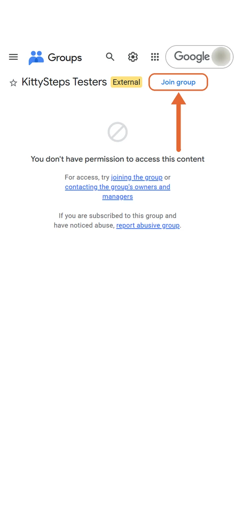
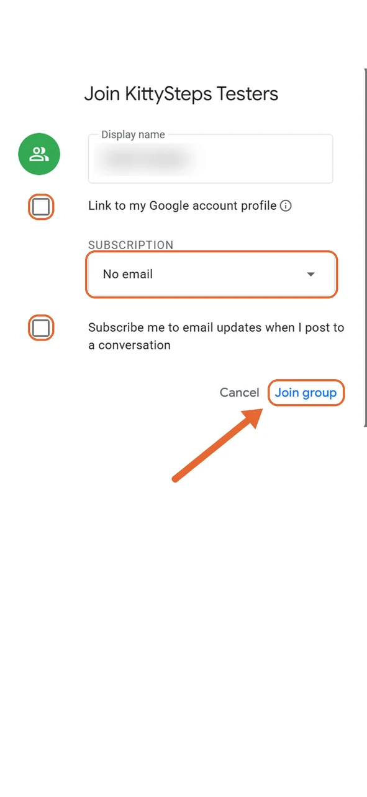

Kitty Steps
Kitty StepsСтань тестировщиком Kitty Steps
Kitty Steps сейчас в закрытом тестировании в Google Play. Чтобы установить игру, нужен телефон на Android и Google-аккаунт, с которым ты заходишь в Google Play. Это займёт 2 минуты.
Вступи в группу тестировщиков
Открой группу и нажми «Присоединиться к группе» (Join group). Надпись о том, что у тебя нет доступа к контенту, — это нормально, она исчезнет после вступления.
На скриншотах страницы Google на английском. У тебя кнопки будут на языке твоего аккаунта и на тех же местах.

Подтверди вступление
Имя можно указать любое. Чтобы не получать писем от группы:
- сними обе галочки;
- в поле «Подписка» (Subscription) выбери No email, то есть вариант без писем.
Затем нажми «Присоединиться к группе».

Прими приглашение в тестирование
Открой страницу тестирования и нажми «Become a tester» («Стать тестировщиком»).
Если страница пишет, что приложение недоступно, подожди несколько минут после вступления в группу и проверь, что ты в том же аккаунте.

Установи игру
Появится надпись «You are a tester.» Нажми «download it on Google Play» и установи Kitty Steps.
Google Play может показать игру не сразу, иногда на это уходит до нескольких часов.

Разреши считать шаги
При первом запуске игра попросит разрешение «Физическая активность». Разреши его, иначе шаги не будут считаться. Шаги обрабатываются только на твоём телефоне.
Спасибо, что помогаешь! 🐾
Чтобы игра вышла в Google Play для всех, Google требует, чтобы минимум 12 тестировщиков оставались в тестировании 14 дней подряд. Поэтому, пожалуйста:
- не выходи из тестирования хотя бы 14 дней;
- заходи в игру время от времени и гуляй вместе с котами;
- пиши о багах и идеях на rpaha.games@gmail.com.